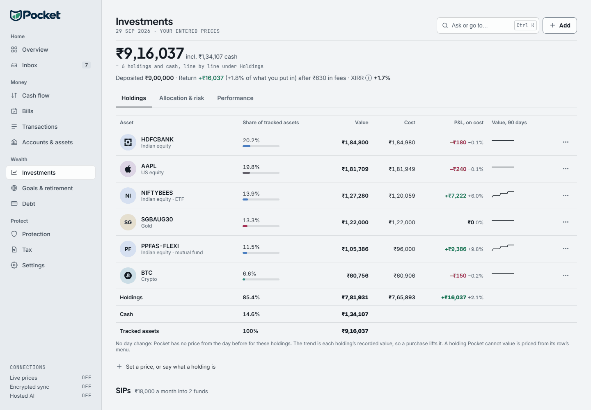

Your whole financial life.One private app.
Cash flow, investments, goals, debt, retirement and documents — planned in one place, with your financial database kept on your own device.

Your financial data never leaves your device. Not by default, not quietly, not ever. There is no cloud account to create and nothing to upload — because the most private place for your money is the machine you already own.
One honest picture of where you stand.
Net worth, portfolio and financial health computed from your own numbers — never estimated, never invented. When a price feed is down, Vestora says so.


Everything you need. Nothing you don't.
Twelve modules that share one database, so a change in any of them shows up everywhere it matters.
Financial health
A score you can act on, broken into eight factors with the reason behind each one.
Cash flow & budgets
Where the money went, what's left, and how long your runway lasts.
Investments
Holdings, allocation, XIRR and concentration — with honest gaps when prices are unknown.
Goals & retirement
Required SIP, step-ups and what-if scenarios, always labelled as assumptions.
Debt
Payoff order, interest saved, and the real cost of every extra month.
Tax planning
Old versus new regime on your numbers, deductions, and an advance-tax calendar.
Protection & estate
Cover gaps, nominees and the documents your family would need to find.
Document vault
PAN, policies and deeds sealed with AES-256-GCM, opened only by your passphrase.
What Vestora will never do.
Trust needs boundaries as much as it needs features.Your money deserves better software.
Request Windows early access and take control of your financial life.
Get early access — Windows